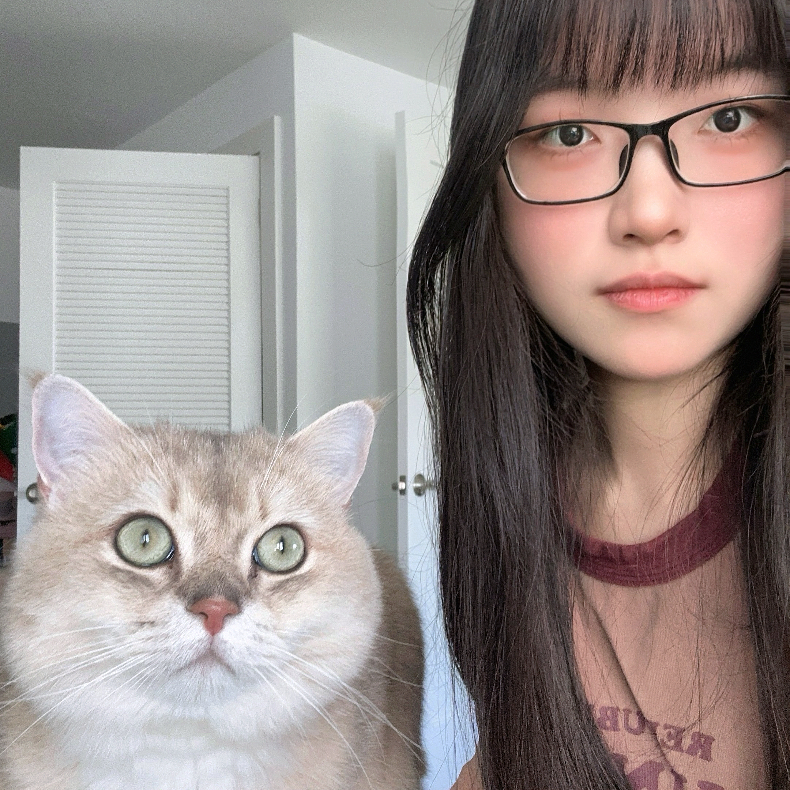

Chenyi Kuang
Now I am an Algorithm Engineer at SkyHive Network. I received my Ph.D. in Electrical Engineering from Rensselaer Polytechnic Institute in 2024.
My research focuses on human behavior understanding from visual data, including gaze estimation, human-object interaction recognition and anticipation, dynamic 3D face reconstruction, 3D eye modeling, and physics-informed machine learning. I am especially interested in building vision systems that understand human attention, action, and intent for assistive robotics, autonomous systems, and embodied AI applications.
News
- 2026Joined SkyHive Network as an Algorithm Engineer.
- 2026Physics-informed Dynamic 3D Face Reconstruction accepted to FG 2026 as an oral presentation.
- 2024Completed Ph.D. in Electrical Engineering at Rensselaer Polytechnic Institute.
- 2024Worked as a Computer Vision Research Intern at Honda Research Institute USA.
- 2024Interaction-aware Dynamic 3D Gaze Estimation in Videos presented as an oral paper at the NeurIPS GMML Workshop.
Research Interests
Human Attention Understanding
Gaze estimation, saliency detection, visual attention modeling, and gaze anticipation.
Human Activity Understanding
Human-object interaction recognition, action anticipation, and intent analysis.
3D Human Modeling
Dynamic 3D face reconstruction, 3D eye modeling, expression analysis, and mesh-based learning.
Physics-informed Learning
Combining biomechanical constraints, physical dynamics, and deep neural networks.
Vision for Robotics
Human-aware perception systems for assistive robotics, aviation platforms, and autonomous systems.
Uncertainty-aware Modeling
Probabilistic prediction, uncertainty estimation, and robust multimodal perception.
Featured Projects
Physics-informed Dynamic 3D Face Reconstruction
A physics-driven framework for dynamic 3D facial reconstruction that integrates biomechanical constraints and facial motion dynamics for expression tracking in video sequences.
Demo 1: Dynamic 3D Face Reconstruction
Demo 2: Physics-informed Facial Motion / Force Visualization
Interaction-aware Dynamic 3D Gaze Estimation
A dynamic gaze estimation framework that models temporal gaze behavior and social interaction patterns in videos, including multi-person attention and interaction-aware gaze dynamics.
Demo: Interaction-aware 3D Gaze Estimation
SAGE: Synchronized Action and Gaze Estimation
A unified framework for gaze detection, gaze anticipation, action recognition, and action anticipation. The system models how human gaze supports action and intent reasoning in first-person and third-person videos.
Exo-Cook Benchmark
A benchmark for third-person joint gaze-action understanding in cooking activities, including gaze labels, action labels, object information, and baseline models for comprehensive human activity analysis.
Experience
Algorithm Engineer
- Developing lightweight deep learning models for production user behavior prediction, including face recognition and user attention analysis.
- Building systems that incorporate spatial-temporal pilot interaction data and pilot activity analysis into recommendation algorithms for an aviation platform.
Research Collaborator
- Collaborating on gaze-conditioned human-object interaction recognition and anticipation research.
- Developed an uncertainty-aware model for joint gaze and action detection and anticipation.
- Patent submission: Gaze-aware Human Activity Detection and Anticipation.
Computer Vision Research Intern
- Developed a unified system for joint human attention, action, and intent analysis.
- Constructed a benchmark for comprehensive human activity analysis with human/object trajectories, action labels, and gaze labels.
Computer Vision Research Intern
- Developed an uncertainty-guided data-free knowledge distillation algorithm for model fusion.
- Applied the method to computer vision tasks including image classification and object detection.
Research Assistant
- Developed geometry-aware facial expression recognition models using 3D Morphable Models.
- Developed physics-driven 4D facial reconstruction for dynamic facial tracking and expression analysis.
- Constructed deformable 3D eye models for accurate 3D gaze estimation under diverse head poses and illumination conditions.
- Built multi-person gaze tracking systems for modeling group interaction dynamics and human attention patterns.
Education
Ph.D. in Electrical Engineering
Bachelor in Electrical Engineering
Selected Publications
Technical Skills
Programming & Tools
Python, MATLAB, PyCharm, Jupyter Notebook, Spyder
Machine Learning Libraries
PyTorch, TensorFlow, Hugging Face Transformers, Scikit-learn, Matplotlib
3D Vision & Geometry
PyTorch3D, gsplat, Trimesh, Open3D, 3D mesh processing, 3D Gaussian Splatting
Research Areas
Gaze estimation, human-object interaction, action recognition, 3D face reconstruction, physics-informed learning
Contact
Email: kuangcy1998@gmail.com
Location: Philadelphia, PA, USA